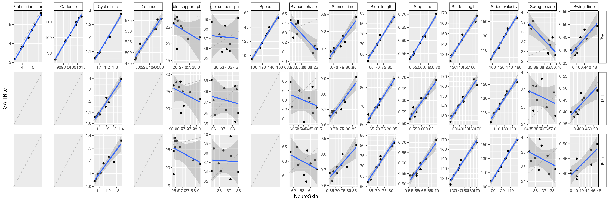

Table of contents
Literature
Meta-analysis of 32 publications (44 studies) across 4 walkway systems (including 39 studies with GAITrite): Parati et al. 2022 (doi )
21 (resp. 23) studies with intra-session (resp. inter-session) test-retest
meta-analytic ICC of gait speed = 0.92 [0.90, 0.94] (fig. 3)
ICC is equally good across most measures and conditions (fig. 4)
Concurrent validity study between GAITrite and a tri-axial accelerometer: Byun et al. 2016 (doi ):
82 subjects, 4.5m GAITrite, 4x2 trials
step time and cadence have excellent ICC with only 8 steps, and very good with only 4-5 (fig. 3)
ICC between the 2 devices is excellent (>0.90, reported for general parameters only, fig. 4)
Authoritative methodological paper on ICC: Koo & Li 2016 (doi )Datanovia
Analysis
Libraries & settings
Show the code
# Stats library (psych) # ICC, consistency only!! library (irr) # ICC, absolute agreement library (boot) # bootstrapping library (car) # bootstrapping confidence intervals library (TOSTER) # equivalence testing (TOST) library (BayesFactor)# Visualization library (DT) # interactive data tables library (ggh4x) # advanced customization of ggplots # Data wrangling library (magrittr) # advances piping operators such as %$% library (tidyverse) # data loading & wrangling; loaded last to avoid functions being masked by other packages # ggplot2 theme theme_set (theme_minimal ()) # lean theme for ggplots # DT interactive tables options # options(DT.options = list(dom = 'pilt')) <- function (data, nDecimals = 3 , pageLength = 9 ) {%>% mutate (across (where (is.numeric), ~ round (.,nDecimals))) %>% mutate (across (where (is.character), as.factor)) %>% datatable (filter = "top" ,options = list (#dom = 'pilt', pageLength = pageLength)) %>% return ()# Paths <- file.path ("./data" )
Load data
Show the code
<- function (file) {%>% # --- load the csv file read_delim (delim = ";" , skip = 1 ,col_names = c ("GAITRite" ,"NeuroSkin" ),col_types = "cc" ) %>% # --- replace the comma decimal symbol by a dot mutate (across (c (GAITRite, NeuroSkin), ~ as.numeric (str_replace (.,"," ,"." )))) %>% # --- extract side and metric from the filename mutate (file_name = str_extract (basename (file), "(?<= \\ ().*?(?= \\ ))" )) %>% separate (file_name, into = c ("side" , "metric" ), sep = "_" , extra = "merge" ) %>% # --- homogenize string case mutate (across (metric, str_to_sentence)) %>% # --- add subject id mutate (id = paste0 ("S" ,row_number ())) %>% # --- reorder columns select (id, metric, side, everything ())<- list.files (path = path.data, pattern = " \\ .csv$" , # list all csv in th path.data full.names = TRUE )# Apply the file processing to all listed files <- map_dfr (csv_files, process_1file)# Append average of Left and Right %<>% gather (key = device, value = value, GAITRite, NeuroSkin) %>% group_by (id, metric, device) %>% summarise (value = mean (value)) %>% mutate (side = "Avg" ) %>% spread (device, value) %>% %>% bind_rows (df) %>% %>% group_by (metric, side) %>% summarise (across (is.numeric, mean))
# A tibble: 37 × 4
# Groups: metric [15]
metric side GAITRite NeuroSkin
<chr> <chr> <dbl> <dbl>
1 Ambulation_time Avg 4.41 4.59
2 Cadence Avg 104. 104.
3 Cycle_time Avg 1.15 1.16
4 Cycle_time Left 1.15 1.16
5 Cycle_time Right 1.15 1.15
6 Distance Avg 533. 532.
7 Double_support_phase Avg 24.5 26.8
8 Double_support_phase Left 24.6 26.8
9 Double_support_phase Right 24.5 26.8
10 Single_support_phase Avg 37.2 36.9
# ℹ 27 more rows
Show the code
# Only for testing of helper functions used in ICC, TOST, etc.: <- df %>% filter (side == "Right" , metric == "Swing_time" ) %>% select (- id)
Correlations
Plot
Phase parameters do not correlate between the two devices: this is reflected in negative ICC for these parameters (see ICC )
Show the code
ggplot (df, aes (x = NeuroSkin, y = GAITRite)) + facet_grid2 (side ~ metric, scales = "free" , independent = "all" ) + geom_abline (slope = 1 , intercept = 0 , linetype = 2 , color = "grey70" ) + geom_point () + geom_smooth (method = "lm" ) + coord_cartesian (clip = "off" ) + theme (strip.background = element_rect (color = "black" , fill = NA ),strip.clip = "off" )

Click figure to enlarge
Simulations
Using simulations, we demonstrate that taking the ratios of 2 variables, each being highly correlated across devices, destroys completely the correlation:
Show the code
library (mvnfast) # to generate correlated variables <- function (n, mu = 0 , sd = 1 , cor) {<- rmvn (n = n,mu = c (mu, mu),sigma = matrix (c (sd^ 2 , cor * sd^ 2 , cor * sd^ 2 , sd^ 2 ), nrow = 2 ))<- x[, 1 ]<- x[, 2 ]<- rmvn (n = n,mu = c (mu, mu),sigma = matrix (c (sd^ 2 , cor * sd^ 2 , cor * sd^ 2 , sd^ 2 ), nrow = 2 ))<- y[, 1 ]<- y[, 2 ]cor.test (x1, x2) |> print ()cor.test (y1, y2) |> print ()cor.test (x1/ y1, x2/ y2) |> print ()simcor (n = 1000 , cor = 0.9 )
Pearson's product-moment correlation
data: x1 and x2
t = 64.802, df = 998, p-value < 2.2e-16
alternative hypothesis: true correlation is not equal to 0
95 percent confidence interval:
0.8862695 0.9101517
sample estimates:
cor
0.898876
Pearson's product-moment correlation
data: y1 and y2
t = 64.241, df = 998, p-value < 2.2e-16
alternative hypothesis: true correlation is not equal to 0
95 percent confidence interval:
0.8845816 0.9088011
sample estimates:
cor
0.897365
Pearson's product-moment correlation
data: x1/y1 and x2/y2
t = 0.31814, df = 998, p-value = 0.7504
alternative hypothesis: true correlation is not equal to 0
95 percent confidence interval:
-0.05195545 0.07201819
sample estimates:
cor
0.01007006
Redundancies in gait parameters
Reference: https://www.tekscan.com/blog/medical/gait-cycle-phases-parameters-evaluate-technology
Speed = step length / step time
Show the code
%>% filter (side == "Avg" ,%in% c ("Speed" ,"Step_length" , "Step_time" )) %>% group_by (metric) %>% #mutate(id = row_number(), .before = 1) %>% gather (key = device, value = value, GAITRite, NeuroSkin) %>% spread (key = metric, value = value) %>% mutate (SpeedCalc = Step_length/ Step_time, .after = Speed) %>% # mutate(`equal?` = as.numeric(abs(Speed - Step_length/Step_time) <= .02)) %>% arrange (device) %>%
Stride/Cycle = 2x step
In theory, 1 stride = 2 steps, which should be reflected in both the time and length metrics.
In practice, it is almost never the case in data and discrepancies can not always be explained by rounding errors, suggesting that they are computed independently:
Show the code
%>% filter (metric %in% c ("Cycle_time" , "Step_time" )) %>% group_by (side, metric) %>% #mutate(id = row_number(), .before = 1) %>% gather (key = device, value = value, GAITRite, NeuroSkin) %>% spread (key = metric, value = value) %>% mutate (` equal? ` = as.numeric (abs (Cycle_time - 2 * Step_time) <= .02 )) %>% arrange (device, side) %>%
Show the code
%>% filter (metric %in% c ("Stride_length" , "Step_length" )) %>% group_by (side, metric) %>% #mutate(id = row_number(), .before = 1) %>% gather (key = device, value = value, GAITRite, NeuroSkin) %>% spread (key = metric, value = value) %>% mutate (` equal? ` = as.numeric (abs (Stride_length - 2 * Step_length) <= .02 )) %>% arrange (device, side) %>%
Stance phase = Stance time / Cycle time
In theory, stance phase is the proportion of cycle time spent in stance.
In practice, there are small discrepancies that could be explained by rounding errors.
Show the code
%>% filter (metric %in% c ("Stance_phase" , "Stance_time" , "Cycle_time" )) %>% group_by (side, metric) %>% mutate (id = row_number (), .before = 1 ) %>% gather (key = device, value = value, GAITRite, NeuroSkin) %>% spread (key = metric, value = value) %>% mutate (stance_by_cycle = round (100 * Stance_time / Cycle_time, 3 )) %>% mutate (` equal? ` = as.numeric (Stance_phase == stance_by_cycle)) %>% arrange (device, side) %>%
Swing phase = Swing time / Cycle time
In theory, stance phase is the proportion of cycle time spent in stance.
In practice, there are small discrepancies that could be explained by rounding errors.
Show the code
%>% filter (metric %in% c ("Swing_phase" , "Swing_time" , "Cycle_time" )) %>% group_by (side, metric) %>% mutate (id = row_number (), .before = 1 ) %>% gather (key = device, value = value, GAITRite, NeuroSkin) %>% spread (key = metric, value = value) %>% mutate (swing_by_cycle = round (100 * Swing_time / Cycle_time, 3 )) %>% mutate (` equal? ` = as.numeric (Swing_phase == swing_by_cycle)) %>% arrange (device, side) %>%
Swing phase = single support phase
In theory, swing phase = single support phase (same definitions).
In practice, it is never the case in the data, and discrepancies can not be explained by rounding errors:
Show the code
%>% filter (metric %in% c ("Swing_phase" , "Single_support_phase" )) %>% group_by (side, metric) %>% mutate (id = row_number (), .before = 1 ) %>% gather (key = device, value = value, GAITRite, NeuroSkin) %>% spread (key = metric, value = value) %>% mutate (` equal? ` = as.numeric (round (abs (Swing_phase - Single_support_phase),1 ) <= 0.1 )) %>% arrange (device, side) %>%
Stance phase = Single + Double support phases
In theory, stance phase = single + double support phase, but this only the case for NeuroSkin (up to rounding error), suggesting that the two devices differ in how they compute these gait parameters:
Show the code
%>% filter (metric %in% c ("Stance_phase" , "Single_support_phase" , "Double_support_phase" )) %>% group_by (side, metric) %>% mutate (id = row_number (), .before = 1 ) %>% gather (key = device, value = value, GAITRite, NeuroSkin) %>% spread (key = metric, value = value) %>% mutate (single_plus_double = round (Single_support_phase + Double_support_phase, 2 ),.keep = "unused" ) %>% mutate (` equal? ` = as.numeric (round (abs (single_plus_double - Stance_phase),2 ) <= 0.01 )) %>% arrange (device, side) %>%
ICC
Intraclass coefficient (ICC) is the most widely reported measure for test-retest performance of, and device comparisons with, the GAITRite (see meta-analysis )
Helper function
Show the code
<- function (data) {# Apply ICC() function from psych package <- psych:: ICC (data %>% select (- c (metric, side)), lmer = FALSE )# Apply icc() function from irr package <- irr:: icc (data %>% select (- c (metric, side)), model = "twoway" , unit = "single" , type = "agreement" )$ results %>% as_tibble () %>% filter (type == "ICC3" ) %>% select (- p) %>% mutate (metric = unique (data$ metric),side = unique (data$ side),.before = 1 ) tibble (metric = unique (data$ metric),side = unique (data$ side),type = "ICC(3,1)" ,ICC = irr_result$ value,` CI low ` = irr_result$ lbound,` CI high ` = irr_result$ ubound) %>% return ()# psych::ICC() calculates consistency, not absolute agreement # icc_result; irr_result <- irr::icc(data %>% select(-c(metric, side)), model = "twoway", unit = "single", type = "agreement")
Compute
Show the code
# Pearson correlation <- df %>% filter (! grepl ("phase" ,metric)) %>% group_split (metric,side) %>% map_dfr (~ mutate (as.data.frame (as.table (cor (.x$ GAITRite, .x$ NeuroSkin))),correlation = round (Freq, 3 ),metric = unique (.$ metric),side = unique (.$ side),.before = 1 )) %>% select (- Var1, - Freq)# ICC <- df %>% filter (! grepl ("phase" ,metric)) %>% select (- id) %>% group_split (metric,side) %>% map_dfr (~ compute_icc (.x)) %>% mutate (across (is.numeric, ~ round (.,3 ))) %>% # --- append correlation coefficients left_join (df.cor, by = c ("metric" ,"side" ))
Show the code
# Bind & print in interactive table %>% display_DT (nDecimals = 2 )
Absolute relative errors
A good absolute measure of how well NeuroSkin matches GAITRite is absolute relative error (ARE) [link](https://oecd.ai/en/catalogue/metrics/absolute-relative-error-are )
Because of the highly non-normal distribution of ARE, estimates and confidence intervals should be computed by bootstrapping.
Helper functions
Show the code
# Mean function with parametrization tailored to boot::boot() <- function (data, ind.samples, var.name) {return (mean (data[c (ind.samples),][[var.name]]))# Function to generate bootstrap distributions, and extract median & CI <- function (data, n = 1000 ) {<- boot:: boot (data, statistic = mean.bootfn, R = n, var.name = "abserror" )<- confint (bt, level = .95 , type = 'bca' ) %>% as_tibble () %>% rename (boot.ci.low = ` 2.5 % ` ,boot.ci.high = ` 97.5 % ` )return (bind_cols (tibble (boot.median = median (bt$ t)),
Data per participant
Show the code
# Calculate relative errors <- df %>% mutate (error = 100 * (NeuroSkin- GAITRite)/ GAITRite,abserror = abs (error))# Print data in interactive table %>% filter (! grepl ("phase" ,metric)) %>%
Bootstrap median & CIs
Compute :
Show the code
<- df.error %>% filter (! grepl ("phase" ,metric)) %>% group_split (metric,side) %>% # Split by group map_dfr (~ mutate (compute_abserror_bootci (., n = 5000 ),metric = unique (.$ metric),side = unique (.$ side),.before = 1 ))
Display results in interactive table:
Show the code
%>% display_DT (nDecimals = 1 )
{kind=link}